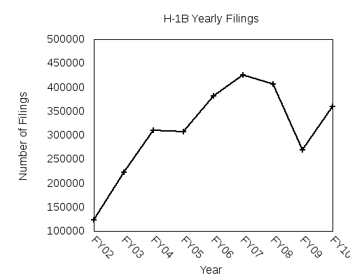

Recently I stumbled upon this corpus of H-1B data. Now it seemed like a good data set to explore so I decided to download the H-1B iCert LCA Data files for the years 2002-2010.
func getTableSQL($header, $tableName, :$defaultLen=100, :$engine="InnoDB", :$dbh=undef) { my ($rSql, $cols); my $csv = Text::CSV->new(); if ($csv->parse($header)) { foreach ($csv->fields()){ $cols .= "`$_` varchar($defaultLen) DEFAULT NULL, \n"; } $rSql = "CREATE TABLE `$tablename` ( $cols ) ENGINE=$engine DEFAULT CHARSET=latin1;"; substr $rSql, rindex($rSql,','), 1, ''; #replace last comma } else { say "Failed to parse line:".$csv->error_input; } if($dbh) { return $dbh->do($rSql); } else { return $rSql; } }
The code is fed the header as a string, and it produces a CREATE TABLE command from the header. Optionally, if you provide it a database handle it will go ahead and create the table for you as well. I know a lot of people seem to think perl is ugly yada yada yada, but its quick and CPAN has a module for everything. So while it might not be as glamorous as Ruby, Python etc. it is kind of awesome in its own way
A quick snapshot of the approximate number of LCA efilings for each year!

| Year | Filings |
|---|---|
| FY02 | 123712 |
| FY03 | 222789 |
| FY04 | 310008 |
| FY05 | 307499 |
| FY06 | 381513 |
| FY07 | 425396 |
| FY08 | 405940 |
| FY09 | 269641 |
| FY10 | 360375 |
As you can see from the graph and the data table, there was an expected dip in the H-1B filings during the recession(2009). I'll be doing some more analysis on the data soon so if there is anything in particular you will like to know about this data, leave some comments and I'll see what I can do!